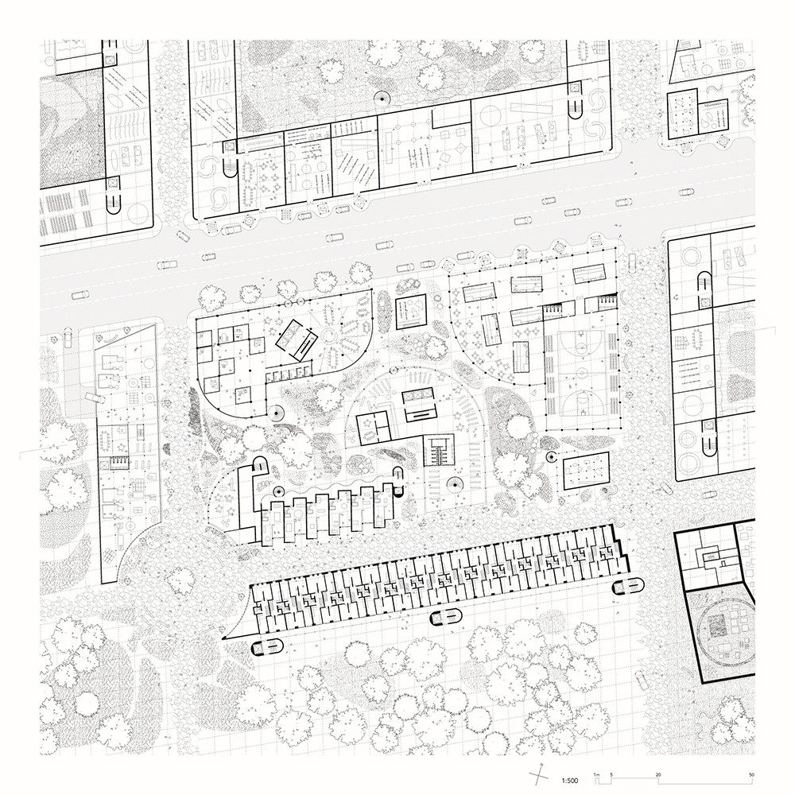

My name is Nathan Shakura, I’m a Toronto-based designer and MArch (’26) graduate from the University of Toronto. My practice is driven by the conviction that architecture is a social act, centered on the tangible impact design has on the communities and societies that move through our built environment.
Projects: golf course autogestion, playstations, a tower for cows, berries & cream, everything everywhere all at once, site, matter, & ecology, room for tower, tarpaulin, vaulted gallery of whimsey, designland landscape architecture, a tenuous dairy timeline, collective dwelling & expropriation for autonomy, living architecture systems group, weaving exploration, dwelling & agoraphobia, bowls
 2601MArch thesis: golf course autogestionExpropriating three Toronto golf courses as common land, governed by a worker’s council land trust.
2601MArch thesis: golf course autogestionExpropriating three Toronto golf courses as common land, governed by a worker’s council land trust. 2514playstationsLandscape option studio. Three stations for looking, listening and lingering in the tidal landscapes of Martin Head, New Brunswick.
2514playstationsLandscape option studio. Three stations for looking, listening and lingering in the tidal landscapes of Martin Head, New Brunswick. 2513a tower for cowsGlobal design studio in Guanacaste, Costa Rica, built on the study of the cattle pen.
2513a tower for cowsGlobal design studio in Guanacaste, Costa Rica, built on the study of the cattle pen. 2512berries & creamMArch studio 4, with Francesca Mercurio. Density without repetition at Dundas and Ossington.
2512berries & creamMArch studio 4, with Francesca Mercurio. Density without repetition at Dundas and Ossington.
2411everything everywhere all at onceIntegrated Urbanism Studio, Daniels Faculty. Opens the studio’s own site. 2410site, matter, & ecologyMArch studio 2. A building cut into the land and clad in stone, after a site visit to Crawford Lake.
2410site, matter, & ecologyMArch studio 2. A building cut into the land and clad in stone, after a site visit to Crawford Lake. 2409room for tower, tarpaulinMArch studio 2, with Francesca Mercurio. Material and relational research around Rebecca Belmore’s work.
2409room for tower, tarpaulinMArch studio 2, with Francesca Mercurio. Material and relational research around Rebecca Belmore’s work. 2308vaulted gallery of whimseyMArch studio 1. A gallery, pavilion, studio, cafe and boathouse on the site of Budweiser Stage.
2308vaulted gallery of whimseyMArch studio 1. A gallery, pavilion, studio, cafe and boathouse on the site of Budweiser Stage. 2307designland landscape architectureConcept sketches, renderings and construction documents for residential gardens in Toronto.
2307designland landscape architectureConcept sketches, renderings and construction documents for residential gardens in Toronto. 2306a tenuous dairy timelineA timeline booklet for ARC1031, as a PDF.
2306a tenuous dairy timelineA timeline booklet for ARC1031, as a PDF. 2205BDes thesis: collective dwelling & expropriation for autonomyCollective dwelling in the unoccupied space of the BMO tower at 100 King St. West.
2205BDes thesis: collective dwelling & expropriation for autonomyCollective dwelling in the unoccupied space of the BMO tower at 100 King St. West. 2204living architecture systems groupSystems design and production for Philip Beesley Studio, including Grove at the 2021 Venice Architecture Biennale.
2204living architecture systems groupSystems design and production for Philip Beesley Studio, including Grove at the 2021 Venice Architecture Biennale. 2203weaving explorationGenerative design. A self-regulating weaving algorithm explored digitally and physically.
2203weaving explorationGenerative design. A self-regulating weaving algorithm explored digitally and physically. 2002dwelling & agoraphobiaDesign for Disability studio. A home oriented to privacy, set among existing masonry walls and a garden.
2002dwelling & agoraphobiaDesign for Disability studio. A home oriented to privacy, set among existing masonry walls and a garden. 1901bowlsWood bowls turned on a lathe, 2018 to 2022.
1901bowlsWood bowls turned on a lathe, 2018 to 2022.
Elsewhere
- PortfolioThe full portfolio as a PDF, updated October 2026.
- Curriculum vitaeWork experience, education, awards and exhibitions.
- Research & publicationsJournal contributions, a research report and the Impossible Toronto study.